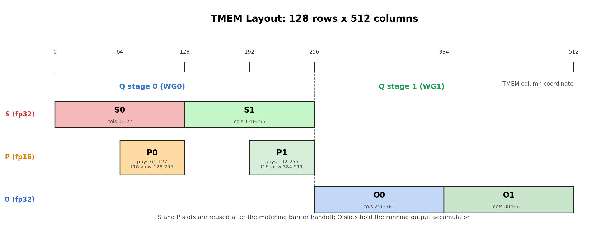
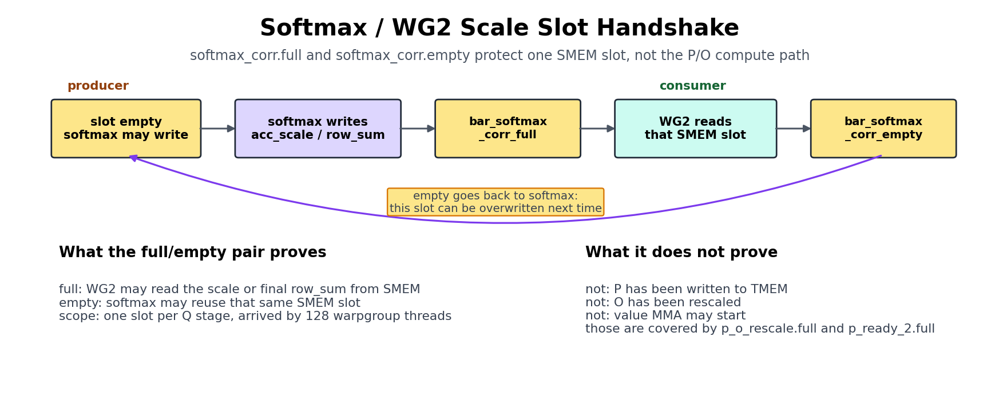
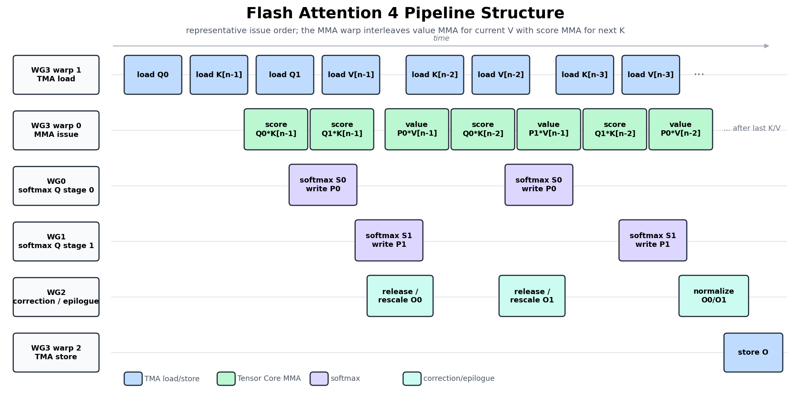

Flash Attention 4¶
概述
- 注意力运行两个 MMA，中间夹着 softmax，因此它不能像 GEMM 那样简单地重复一个 MMA。
- 该核函数（kernel）组合了第一部分的硬件原语（TMA、
tcgen05、TMEM、屏障）和第三部分的 GEMM 技术，加上线程束（warp）角色、在线 softmax 重缩放、因果掩码和 GQA。
注意力是决定一个 transformer 能否运行的核函数，也是我们到目前为止构建的一切终于要协同工作的地方。我们为 GEMM 组装的每一块在这里都延续：TMA 分块搬运、tcgen05 MMA、TMEM、warpgroup 寄存器分块和显式屏障。
挑战在于注意力不是重复一个 MMA。它是两个 MMA，中间夹着真正的工作：在线 softmax、因果掩码，以及让较早和较晚的分块保持统一尺度的重缩放。
那个中间阶段正是新困难所在。一个普通矩阵乘法只往累加器中加；注意力必须在新键和值流入时重新审视并重缩放它已经算出的结果。softmax 工作本身也在两个 Tensor Core MMA 之间的 CUDA 核上运行，因此指数运算和逐行归约直接位于关键路径上。
这就是为什么注意力优化的很大一部分实际上是 softmax 优化：重构 exp，以及将 softmax 与 MMA 重叠，而非在其上停顿。
本章的目标不是从零推导 Flash Attention。我们只保留刚好够用的算法内容使核函数可读，然后把注意力花在真正新的部分：该算法如何变成 TIRx。
最清晰的切入点是跟随一个分块流经核函数。Q、K 和 V 作为输入分块进入，从 GMEM 加载到 SMEM。得分 MMA 将 Q 和 K 相乘，在 TMEM 中生成得分分块 S。Softmax 将 S 转为分子分块 P，值 MMA 组合 P 和 V 来更新输出累加器 O。
到目前为止这看起来像两个粘在一起的矩阵乘法，但有一个 GEMM 从未需要处理的转折：每当运行中的 softmax 最大值改变，迄今为止累积的 O 突然处于错误的尺度。在下一个值 MMA 安全地累加进去之前，它必须被重缩放。下面各节先追踪这条路径，然后展示 TIRx 如何将每个阶段交给一个 warpgroup 并把各阶段连接起来。
算法形状¶
在我们把分块放进内存之前，我们需要那些分块服务的算法。对于一个查询块，Flash Attention 计算：
字面读，公式说要形成完整的得分矩阵 S = QKᵀ，对其做 softmax，然后乘以 V。这是我们唯一不能用的方法，因为完整的 S 极其巨大。在 seq=4096 时它每个头持有约 16M 个元素，fp32 下约 64 MB，比 SMEM 或单个 128×512 TMEM 区域大几个数量级。片上根本没有地方放它。Flash Attention 的回答是从不实例化 S。相反它按块流式处理 K/V，并携带三个逐行运行状态来概括迄今所见的一切：
row_max：迄今所见的最大得分。row_sum：softmax 的运行分母。O：运行输出累加器。
流式更新是保持这些状态在新块到达时正确的原因。微妙之处在于每次处理一个块时，运行最大值可能上升，一旦上升，我们在旧最大值下计算的一切现在处于错误的尺度。所以在加入新贡献之前，我们先把旧状态拉回新尺度：
S = Q_block @ K_block.T
m_new = max(row_max, rowmax(S))
scale = exp((row_max - m_new) / sqrt(d))
P = exp((S - m_new) / sqrt(d))
row_sum = row_sum * scale + rowsum(P)
O = O * scale + P @ V_block
row_max = m_new
这里单个 scale 因子一物两用：它同时重缩放运行分母和运行输出，使较早和较晚块的贡献最终在同一尺度下度量。
上面的伪代码使用了自然的 exp 和显式的 /sqrt(d)，因为这样最容易读，但核函数走了一条更便宜的路线。它将 1/sqrt(d) 和 log2(e) 折叠为一个常量 scale_log2 = log2(e)/sqrt(d)，并用恒等式 exp(x/sqrt(d)) = exp2(x · scale_log2) 在原始得分上用硬件 exp2 求每个指数。动机很简单：在此硬件上 exp2 比自然 exp 更快。
在继续之前有一点值得厘清：这里的 P 不是最终的归一化注意力矩阵。它只是当前 K/V 块的 softmax 分子。归一化被故意推迟，只有在最后一个块之后核函数才写出 O / row_sum。
对于 TIRx，知道算法计算什么只是画面的一半。另一半是核函数运行时每个分块在哪里，因为那才是决定布局和屏障代码的东西。S、P 和 O 都是分块值，每个都有一个家：
S是得分分块。得分 MMA 将其写入 TMEM。P是 softmax 分子分块。Softmax 将S从 TMEM 读入寄存器，计算P = exp((S - m_new) / sqrt(d))，并将P写回 TMEM。O是输出累加器分块。值 MMA 从 TMEM 读P、从 SMEM 读V，然后累加到 TMEM 中的O。
我们之前标记的重缩放也是分块操作，而非标量簿记：当 row_max 改变时，旧的 O 从 TMEM 读出，在寄存器中相乘，在下一个值 MMA 累加进去之前写回 TMEM。后面的每一节都遵循同样的结构：一个分块放置、一条硬件路径、以及一道证明下一个消费者可以运行的屏障。
分块原语图¶
有了运行状态和它们的归属，我们可以把算法摆成一串具体的分块移动。对于一个 K/V 块，核函数从上到下走这条分块路径：
Q, K, V in GMEM
-> Q, K, V in SMEM 通过 TMA 加载
-> S in TMEM 通过得分 MMA: QK^T
-> P in TMEM 通过 softmax 分子: TMEM -> RF -> TMEM
-> O in TMEM 通过值 MMA: P V
-> O in GMEM 通过归一化、SMEM 暂存和 TMA 存储
与 GEMM 的差异归结为一行。GEMM 是一条 MMA 链的重复；FA4 有两个 MMA 阶段，中间夹着 softmax。后续几乎所有内容都是这一个额外阶段的结果。
如果我们将短路径展开为显式的生产者-消费者边，就得到完整图：
| 阶段 | 分块移动或计算 | TIRx 原语 | 硬件路径 |
|---|---|---|---|
| 加载 Q/K/V | GMEM 分块 -> SMEM 分块 | Tx.copy_async(..., dispatch="tma") |
TMA 加载 |
| 得分 MMA | Q in SMEM 和 K in SMEM -> TMEM 中的得分分块 S |
Tx.warp.gemm_async(..., dispatch="tcgen05") |
tcgen05.mma |
| Softmax 读 | TMEM 中的 S -> warpgroup 寄存器分块 |
Tx.wg.copy_async(reg, tmem) |
tcgen05.ld |
| Softmax 写 | 寄存器中的分子分块 P -> fp16 TMEM 视图 |
Tx.copy_async(tmem_as_f16, reg) |
TMEM 存储，后接 tcgen05.wait.st() |
| 值 MMA | TMEM 中的 P 和 SMEM 中的 V -> TMEM 中的输出累加器 O |
Tx.warp.gemm_async(..., dispatch="tcgen05") |
tcgen05.mma（带 TMEM 操作数） |
| 校正 | TMEM 中的 O -> 寄存器 -> TMEM 中的 O |
TMEM 读回、寄存器乘法、TMEM 存储 | tcgen05.ld / TMEM 存储 |
| 尾声 | TMEM 中的最终 O -> 寄存器 -> SMEM -> GMEM |
TMEM 读回、Tx.copy、TMA 存储 |
tcgen05.ld + TMA 存储 |
新增的行是 softmax 和校正。两者都增加了 TMEM -> 寄存器 -> TMEM 流量，并在得分 MMA 和值 MMA 之间创造了额外的交接。
与你的 agent 一起尝试：让它只追踪上面的短路径。对每个箭头，说出生产者阶段、消费者阶段、源分块、目标分块和硬件路径。然后问哪些箭头在 GEMM 章节中不存在。
线程束角色与作用域¶
数据路径定下来后，自然的问题是每个阶段到底由谁运行。这里的每个 CTA 有 4 个 warpgroup，共 512 个线程，它们不是按触碰的数据划分，而是按一个 warpgroup 做哪种工作划分：
- WG3 驱动硬件引擎：TMA 加载、MMA 和 TMA 存储。
- WG0、WG1 和 WG2 做那些引擎调用之间寄存器密集的数学：softmax、校正和尾声。
确切的角色表：
| 所有者 | 角色 | 做什么 |
|---|---|---|
| WG3, warp 1 | TMA 加载 | 将 Q、K 和 V 分块从 GMEM 加载到 SMEM |
| WG3, warp 0 | MMA | 发射得分 MMA 和值 MMA |
| WG3, warp 2 | TMA 存储 | 将最终 O 分块从 SMEM 存储到 GMEM |
| WG0 | Q 阶段 0 的 softmax | 从 TMEM 读 S，计算 P，将 P 写入 TMEM |
| WG1 | Q 阶段 1 的 softmax | 为第二个 Q 流水线阶段做同样的工作 |
| WG2 | 校正和尾声 | 在 TMEM 中重缩放 O，归一化，暂存输出 |
很容易把"两个 Q 阶段"误读为两个注意力头，但它们不是。它们只是 Q 流水线中的两个槽，WG0 拥有一个、WG1 拥有另一个，使两个 Q 分块可以同时在途。这就是 softmax 工作出现两次的原因——一次在 WG0、一次在 WG1。
代码用符号坐标选出这些角色：
读核函数时，先找角色分支。它告诉你哪个组拥有嵌在其中的每个分块原语。
- WG3 warp 1 启动 TMA 加载命令。一个被选中的通道发射拷贝，TMA 引擎搬移分块。
- WG3 warp 0 发射
tcgen05.mma指令。 - WG0 和 WG1 在完整 warpgroup 作用域下运行 softmax。
- WG2 在完整 warpgroup 作用域下运行校正和尾声工作。
一个不对称最终塑造了整个屏障图：每个 MMA，无论是得分还是值，都只从 WG3 warp 0 单独发射。WG0 和 WG1 从不发射 MMA。它们只消费得分分块、运行 softmax、将 P 写回 TMEM。
这种分离正是 softmax 需要在周围加屏障的原因。s_ready 将得分分块从 MMA warp 传递给 softmax；p_o_rescale 传递 P 和一个对值 MMA 安全的 O 槽——要么已经重缩放，要么因为不需要重缩放而已释放。本章剩余部分会不断回到这两个名字。
阅读片段¶
本章的片段摘自 flash_attention4.py，因此它们不可避免地引用了我们在未重现的核函数部分中定义的名字。自描述的那些（wg_id、warp_id、BLK_M/BLK_N、HEAD_DIM、kv_stage、SMEM_PIPE_DEPTH_* / TMEM_PIPE_DEPTH 深度、should_accumulate 和 CTA_GROUP（此处为 1））我们在它们首次重要的地方引入。其余的在此表中给出一行释义，这样当片段把一个不熟悉的名字放在你面前时你有处可查：
| 名字 | 含义 |
|---|---|
q_stage, i_q |
Q 流水线阶段，0 或 1，即哪个 Q 分块槽（SMEM_PIPE_DEPTH_Q = 2）。在 WG0/WG1 的 softmax 内，warpgroup 自己的 wg_id（0 或 1）就是这个阶段索引，因此 S_region[q_stage]、P_region[wg_id] 和 O_region[i_q] 都选择同一个 Q 阶段 |
MMA_N |
TMEM 列中的得分/输出分块宽度（128） |
MMA_K |
P/V 列中的 MMA 内部 K 步长（16）；K_SPLIT = 6 * MMA_K = 96 |
K_SPLIT |
值 MMA 调度的分割点（见两个 MMA 阶段）；第一个值 MMA 覆盖列 0:K_SPLIT（6 * MMA_K = 96） |
should_rescale |
WG2 逐行标志：旧 O 是否需要在下一个值 MMA 之前重缩放（用 any_sync 在 warpgroup 内归约） |
rescale_threshold |
小幅 row-max 变化的跳过阈值；当前核函数用 8.0，跳过的重缩放将 acc_scale 设为恰好 1.0 |
scale_log2 |
log2 单位下的 softmax 缩放，log2(e)/√d，因此 P = exp2((S - m) · scale_log2) |
acc_scale |
softmax 通过 SMEM 邮箱传给 WG2 的逐行重缩放因子 |
chunk_start/chunk_end, p_start/p_end |
正在读 / 写的 32 宽 softmax 块的列范围 |
两个 MMA 阶段¶
对每个流式 K/V 分块，Flash Attention 运行两个 MMA 阶段，中间以 softmax 桥接：
把它想象成一排三个生产者。第一个 MMA 产生注意力得分 S，softmax 将 S 转为分子 P，第二个 MMA 消费 P 来更新输出累加器 O。除以 row_sum 的归一化推迟到尾声，在每个 K/V 分块都发言过之后。
下面每个分块操作都得到与 GEMM 步骤相同的作用域 / 布局 / 派发卡，多加一行交接，命名将分块传递给下一个角色的屏障。
计算代码从不说原始 TMEM 列号。相反，核函数将其单个 TMEM 分配切成各阶段的视图（S_region、P_region、O_region）并按流水线阶段索引（S_region[q_stage]、O_region[i_q]、P_region[i_q, 0:K_SPLIT]）。这些视图在 TMEM 布局与复用 一节中用 T.TMEMStages 定义；现在只需把每个区域当作同一物理 TMEM 的一个命名切片。
得分 MMA¶
两个阶段中的第一个是得分 MMA，即每个 K/V 迭代开始的矩阵乘法。它计算：
并将 128 x 128 得分分块写入 TMEM：
Tx.warp.gemm_async(
S_region[q_stage],
Q_smem[q_stage, 0:BLK_M, 0:HEAD_DIM],
K_smem[kv_stage, 0:BLK_N, 0:HEAD_DIM],
dispatch="tcgen05",
cta_group=CTA_GROUP,
)
if T.ptx.elect_sync():
s_ready.arrive(q_stage)
我们可以问 GEMM 章节对每个分块操作问过的同样四个问题：谁运行它、分块在哪里、如何派发、如何交接：
分块原语读出：得分 MMA - 作用域：WG3 warp 0 发射；一个被选中的通道到达
s_ready。 - 布局：SMEM 中的 Q、K → TMEM 中的S（S_region[q_stage]）。 - 派发：tcgen05。 - 交接：s_ready（→ softmax）。
单个被选中的线程在 s_ready 上到达就是整个交接。它宣布这个得分分块已完成，softmax warpgroup 现在可以自由读取它。
MMA 之间的 Softmax¶
两个 MMA 之间是 softmax，即把得分分块 S 转为分子分块 P 的阶段。其读出卡：
分块原语读出：Softmax - 作用域：WG0（Q 阶段 0）/ WG1（Q 阶段 1），完整 warpgroup。 - 布局：TMEM 中的
S→ 寄存器 → fp16 TMEM 中的P（P_region[wg_id]）。 - 派发：tcgen05.ld读取，TMEM 存储写入；之间在寄存器中做逐行数学。 - 交接：等待s_ready；到达p_o_rescale（前 96 列）和p_ready_2（最后 32 列）。
这个阶段是完全没有 GEMM 对应的阶段。WG0/WG1 等待得分分块在 s_ready 上到达，然后从 TMEM 中每次一个寄存器大小的块读出：
这是一次 warpgroup 作用域下的 TMEM 到寄存器分块读取。现在得分在寄存器中，softmax warpgroup 依次做三件事：
- 计算行最大值和行求和，
- 计算 softmax 分子分块
P， - 将
P以 fp16 写回 TMEM。
最后一步看起来像：
为什么要在寄存器中算完 P 后又写回 TMEM？因为值 MMA 需要 P 作为分块操作数，而 MMA 不能把分散的逐线程标量寄存器当作矩阵读取。此核函数中 MMA 可读的 P 形式是 P_region，即 fp16 TMEM 别名 tmem_as_f16 上的视图。所以写回不是多余的搬动；它是把 P 放进下一个 MMA 实际能消费的唯一形状。
值 MMA¶
第二个阶段，也是关闭每个 K/V 迭代的阶段，是值 MMA。它计算：
当此 MMA 运行时，O 已被放入当前 K/V 块的正确状态——第一个块初始化、后续块重缩放——因此 MMA 只需累加。与 GEMM 的区别在于操作数在哪里：A 操作数是 TMEM 中的 P，B 操作数是 SMEM 中的 V，累加器 O 也在 TMEM：
# 第一个子 MMA: 列 0:K_SPLIT（P 的前 96 列 / V 的行）。
Tx.warp.gemm_async(
O_region[i_q],
P_region[i_q, 0:K_SPLIT],
V_smem[kv_stage, 0:K_SPLIT, 0:HEAD_DIM],
transB=True,
accum=should_accumulate,
dispatch="tcgen05",
cta_group=CTA_GROUP,
)
# 第二个子 MMA（同形式，accum=True，由 p_ready_2 门控）覆盖
# 剩余列 K_SPLIT:BLK_N。
分块原语读出：值 MMA - 作用域：WG3 warp 0。 - 布局：TMEM 中的
P+ SMEM 中的 V → TMEM 中的O（O_region[i_q]）。 - 派发：tcgen05（带 TMEM 操作数）。 - 交接：等待p_o_rescale、p_ready_2、kv_load.full；到达o_ready（→ 尾声）。
这种操作数放置是两个 MMA 的硬件差异：
- 得分 MMA 从 SMEM 读两个操作数：Q 和 K。
- 值 MMA 从 TMEM 读一个操作数
P。 - 值 MMA 从 SMEM 读另一个操作数 V。
- 结果累加到 TMEM 中的
O。
accum=should_accumulate 标志实现了算法中"初始化或累加"的选择：在查询块的第一个 K/V 分块上为 false，之后每个分块为 true。
你可能还注意到值 MMA 不是一次性运行，而是拆成 96 + 32 调度：
- Softmax 以四个 32 列块写
P。 - 前三块就绪后，值 MMA 立即开始
P的前 96 列和 V 的对应行。 - 最后 32 列等
p_ready_2。 - 第二个 MMA 消费最后的块并完成该分块。
拆分的原因是让 Tensor Core 保持忙碌。将值 MMA 作为单条指令运行，整个阶段会停顿到所有四个 32 列 P 块都完成指数运算和存储。通过在前三块就绪后立即发射，核函数将最后一块的 exp 和 TMEM 写入与一个已在途的 96 宽 MMA 重叠，把原本的空闲时间变成有用工作。
TMEM 布局与复用¶
S、P 和 O 全部要共享一个 128 x 512 TMEM 分配，它们打包进去的方式正是本核函数中屏障与布局不可分割的原因：
下图直接展示了这种打包：得分槽、分子槽和输出槽全部 共享一个 TMEM 分配，因此屏障协议才是使复用合法的东西。

该图读作一组分块槽：
- 得分槽持有
S = QK^T。 - 分子槽持有 softmax 指数步骤后的
P分块。 - 输出槽持有 fp32
O累加器。
这些不是独立的缓冲区。它们是同一个分配的区域，共享不是风格选择而是被迫的。在 Q 流水线深度 2 下，两个 S 槽（2 × MMA_N = 256 列）和两个 O 槽（2 × MMA_N = 256 列）已经占满全部 512 个 fp32 列。没有剩余给 P，因此 P 别无选择，只能通过更窄的 fp16 视图别名到同样的字节。这之所以安全，唯一原因是每个区域严格在其前一个消费者完成后才被复用，而那个时序正是屏障所保证的。因此在 FA4 中屏障不仅是调度；它们首先使布局合法。
别名技巧通过 T.TMEMPool 设置。核函数取一个 fp32 视图（tmem）用于得分和输出累加器，然后将池基址回退到 0，在同样的物理字节上取第二个 fp16 视图（tmem_as_f16）：
tmem_pool = T.TMEMPool(pool, total_cols=N_COLS_TMEM, cta_group=CTA_GROUP, tmem_addr=tmem_addr)
tmem = tmem_pool.alloc((128, N_COLS_TMEM), "float32")
tmem_pool.move_base_to(0)
tmem_as_f16 = tmem_pool.alloc((128, N_COLS_TMEM * 2), "float16")
tmem_pool.commit()
因为 fp16 元素只有一半宽，fp16 视图在同样字节上暴露两倍的可索引列，那正是 P 所处的空间——fp32 布局没有余地的空间。有了两个视图，核函数用 T.TMEMStages 将 S、P 和 O 槽切为分阶段区域，使计算代码按流水线阶段而非原始列索引：
S_region = T.TMEMStages(tmem, col_start=0, width=MMA_N, stages=SMEM_PIPE_DEPTH_Q, stride=MMA_N)
O_region = T.TMEMStages(tmem, col_start=MMA_N * SMEM_PIPE_DEPTH_Q, width=MMA_N, stages=SMEM_PIPE_DEPTH_Q, stride=MMA_N)
P_region = T.TMEMStages(tmem_as_f16, col_start=MMA_N, width=BLK_N, stages=SMEM_PIPE_DEPTH_Q, stride=MMA_N * 2)
P_region 步幅中的 * 2 是别名可见地泄漏到代码中的唯一位置。S_region 和 O_region 以 fp32 tmem 列度量，而 P_region 以 fp16 tmem_as_f16 列度量，后者只有一半宽，因此阶段间移动需要加倍的步幅才能落在同样的物理字节上。不过一旦区域定义好，计算代码保持干净：它写 S_region[q_stage]、读 S_region[wg_id, ...]、写 P_region[wg_id, ...]、累加到 O_region[i_q]，从不触碰原始列索引。
与你的 agent 一起尝试：让它解释此 FA4 核函数中的 fp32（tmem）和 fp16（tmem_as_f16）视图。哪些物理 TMEM 区域持有 S、P 和 O，为什么 P_region 的步幅用 MMA_N * 2？把复用问题留给下一节：在屏障表之后，检查哪些消费者必须在每个区域可复用之前完成。
屏障如何连接角色¶
这是核函数最难的部分，所以值得逐步来。先从沿主计算路径搬运数据的少数几道屏障开始，把其余当作以后可查的簿记。数据就绪交接：
| 交接 | 含义 |
|---|---|
| TMA 加载 -> 得分/值 MMA | Q、K 或 V 已到达 SMEM，可喂给 MMA |
| 得分 MMA -> softmax | S 在 TMEM 中就绪 |
| softmax/校正 -> 值 MMA | P 在 TMEM 中就绪，且 O 可安全累加 |
| 值 MMA -> 尾声 | 最终 O 在 TMEM 中就绪 |
| 尾声 -> TMA 存储 | O_smem 可存储 |
不在此清单中的都是流水线簿记：释放 SMEM、TMEM 或暂存缓冲区使另一个角色可复用的屏障。有用的是，每道屏障无论搬运数据还是仅做簿记，读法都一样——作为分块交接。你问谁生产了数据、谁消费它、以及两者都完成后哪个缓冲区变空。
下一图将这些交接折叠为两个 MMA 阶段的精确就绪门： 得分 MMA 等什么，值 MMA 在累加前必须等什么。

将此图读作一组正确性门而非调度。它回答"此 MMA 可发射前什么必须为真"，对时序只字不提。得分 MMA 等 SMEM 中的 Q 和 K，然后产出 S。值 MMA 同时等三件事：SMEM 中的 V、来自 softmax 的 P 分块、以及一个 WG2 已释放或已重缩放的 O 槽。softmax 到值的门因我们已遇到的原因而拆分：值 MMA 可在 P 的前 96 列就位后即开始，p_ready_2 释放最后 32 列。
有一道交接不符合分块就绪模式：softmax 到校正的边。softmax 不传递分块，而是通过一个单槽 SMEM 邮箱向 WG2 传递单个标量（K/V 循环中的 acc_scale，或尾声中的最终 row_sum）。因为该槽每次迭代都复用，必须由一对 full/empty 屏障守护：
下图放大了那个邮箱握手，这就是为什么这对屏障 应读作一个标量生产者-消费者通道，而非分块就绪门。

将 softmax_corr.full 和 softmax_corr.empty 读作生产者-消费者对：
- Softmax 在复用 scale/sum 槽之前等待
softmax_corr.empty。 - Softmax 将
acc_scale或最终row_sum写入该槽。 - Softmax 到达
softmax_corr.full。 - WG2 等待
softmax_corr.full，然后读取该槽。 - WG2 到达
softmax_corr.empty。 - Softmax warpgroup 可在下一阶段复用该槽。
值得小心 softmax_corr.empty 做什么和不做什么。它只表示 WG2 已消费 scale/sum 槽。它对 P 是否就绪只字不提，且绝不是让值 MMA 开始的门。那道门是 p_o_rescale，它在 P 的前 96 列写入且 O 槽可安全累加时触发。混淆两者是错误结果 bug 的经典来源。
有了主路径，完整屏障列表作为参考：
| 屏障 | 生产者 -> 消费者 | 什么变安全 |
|---|---|---|
q_load.full |
TMA 加载 -> 得分 MMA | Q SMEM 分块可喂给 MMA |
q_load.empty |
此 Q 阶段的所有得分 MMA -> TMA 加载 | Q SMEM 阶段可复用于下一个任务 |
kv_load.full |
TMA 加载 -> 得分/值 MMA | K 或 V SMEM 分块可喂给 MMA |
kv_load.empty |
得分/值 MMA -> TMA 加载 | K/V SMEM 阶段可复用 |
s_ready |
得分 MMA -> softmax | S TMEM 分块可读 |
p_o_rescale |
softmax + WG2 -> 值 MMA | P 的前 96 列在 TMEM 中，且 O 槽对值 MMA 安全 |
p_ready_2 |
softmax -> 值 MMA | P 的最后四分之一在 TMEM 中 |
o_ready |
值 MMA -> 尾声 | 最终 O 累加器就绪 |
softmax_corr.full |
softmax -> WG2 | acc_scale 或最终 row_sum 在 SMEM 邮箱中就绪 |
softmax_corr.empty |
WG2 -> softmax | 同一 SMEM 邮箱槽在 WG2 读取后可复用 |
corr_epi.full |
尾声 -> TMA 存储 | O_smem 可存储 |
corr_epi.empty |
TMA 存储 -> 尾声 | O_smem 阶段可复用 |
与 GEMM 一样，你可以从谁生产信号预测屏障类型：
- TMA 加载用
TMABar，因为 TMA 引擎按字节数计数自身完成。 - MMA 完成用
TCGen05Bar，因为tcgen05.commit信号完成组。 - 纯线程到线程的交接用
MBarrier，参与线程显式到达。
拆分的 softmax 到值交接值得细看。它用两道门：
p_o_rescale在P的前 96 列写入且O分块可安全累加后让值 MMA 开始。p_ready_2释放P的最后 32 列，匹配上一节的96 + 32值 MMA 调度。
第一个 K/V 块是简单情况。WG2 预到达 p_o_rescale，因为还没有旧 O 分块要重缩放。
后续块必须更小心。WG2 只有在跳过了一次不必要的重缩放或完成了旧 O 的重缩放之后才到达 p_o_rescale。跳过测试故意保守：softmax 计算 log2 尺度的差值 (m_old - m_new) * scale_log2；如果该值仍高于 -rescale_threshold，新最大值移动得不够远，不值得重缩放，因此核函数保持旧最大值并将 acc_scale 设为恰好 1.0。只有更大的最大值跳变才走 exp2 路径并请 WG2 重缩放 O。
WG2 随后用 any_sync 在 warpgroup 内归约 should_rescale。如果没有行需要更新，它保持 O 不动。这个跳过很重要，因为重缩放 O 是对整个累加器的一次完整 TMEM -> RF -> TMEM 读-改-写，当阈值逻辑已将 acc_scale 保持为 1.0 时纯粹是浪费。
注意所有新屏障聚集在一处。s_ready、p_o_rescale、p_ready_2 以及 softmax/校正对都是 softmax 周围的屏障。它们存在的原因只有一个：得分 MMA 和值 MMA 不再相邻。寄存器数学、TMEM 重写和输出重缩放现在位于它们之间，这些步骤中的每一个都需要自己的交接。
与你的 agent 一起尝试：让它追踪一个 K/V 块经过 s_ready、p_o_rescale、p_ready_2 和 o_ready。对每道屏障，问谁等待、谁到达、什么分块变可读、之后什么存储可复用。
流水线结构¶
屏障告诉我们一个角色消费分块前什么必须就绪。它们没告诉我们什么实际并发运行，而这是我们现在转向的问题。两者确实不同：一道正确性门可在生产者恰好运行之前很久或之后很久被满足。
这里没有单一流水线深度，因为不同分块流以不同速率移动。核函数因此为每个流保持一个独立的环：
- Q 流水线深度 2：一个 CTA 在两个 Q 阶段上工作。WG0 处理一个阶段，WG1 处理另一个。
- KV 流水线深度 3：K 和 V 块在内层循环中流式通过，同时复用相同的 Q 阶段。
- TMEM 流水线深度 2：每个 Q 阶段有自己的 S/P/O TMEM 槽，这些槽在匹配的屏障触发后复用。
下图从正确性门切换到时间线视图，展示一旦这些独立的环 在途，哪些角色可以大致同时活跃。

将此读作时间线而非屏障图。它展示哪些角色大致在同一时刻活跃，而之前的屏障流图是你去检查精确生产者-消费者等待的地方。两者之间，这两张图回答了我们在本节开头提出的两个不同问题。
每行匹配代码的一条角色分支：
- WG3 warp 1 发射 TMA 加载。
- WG3 warp 0 发射得分 MMA 和值 MMA。
- WG0 和 WG1 为两个 Q 阶段运行 softmax。
- WG2 释放或重缩放
O，然后归一化最终输出。 - WG3 warp 2 发射 TMA 存储。
从左到右读图追踪一个有代表性的流水线波。加载 warp 以 Q0、K[n-1]、Q1、V[n-1] 开始，然后持续流式加载更低索引的 K/V 块。MMA warp 发射前几个得分 MMA 产出 S0 和 S1，WG0/WG1 将它们转为 P0 和 P1。
重要的是 MMA warp不先运行所有得分 MMA 再运行所有值 MMA。一旦两个 Q 阶段都已填充，它交错两种：当前 V 块的值 MMA，然后下一个 K 块的得分 MMA，如此交替：
score Q0*K[n-1]
score Q1*K[n-1]
value P0*V[n-1]
score Q0*K[n-2]
value P1*V[n-1]
score Q1*K[n-2]
value P0*V[n-2]
...
这种交错是得分、softmax、校正和值行在图中全部重叠而非整齐依次运行的原因。
WG2 行标记为 释放 / 重缩放，两半对应我们见过的两种情况。在第一个 K/V 块上还没有旧 O，因此 WG2 只参与让值 MMA 继续的交接；在后续块上它可能在值 MMA 累加进去之前重缩放旧 O。归一化和 TMA 存储恰好发生一次，在注意力任务的最后一个 K/V 块之后。
没有单一的 GEMM 式流水线能描述 FA4，因为 Q、K/V 和 TMEM 槽都按独立进度推进。TIRx 将这些进度保持为显式的独立分块缓冲区、PipelineState 游标和屏障相位，而非把核函数藏在一个单一原语背后。代价是更多活动部件，但好处是复杂性保持可见和可检视。
重缩放与写回¶
重缩放是强制的，不是我们可以丢弃的优化。在线 softmax 可以在每个新得分分块上提高逐行最大值，每当它这样做，从较早块累积的 O 就按旧最大值缩放。这使每个较早项大了 exp(m_new - m_old) 倍。跳过校正则这些块被过度加权，最终输出就是错的。修复是一次 TMEM → 寄存器 → TMEM 分块操作：
工作分给两个角色。Softmax 计算逐行缩放并放入 SMEM 邮箱；WG2 等待 softmax_corr.full，从 TMEM 读出当前 O，乘以该缩放，写回 O：
RESCALE_TILE = T.meta_var(16)
o_row = T.wg_reg_tile(RESCALE_TILE)
Tx.copy_async(o_row, O_region[i_q, d_start : d_start + RESCALE_TILE])
Tx.mul(o_row, o_row, acc_scale)
Tx.copy_async(O_region[i_q, d_start : d_start + RESCALE_TILE], o_row)
T.ptx.tcgen05.wait.st()
值得强调的是这是对整个 O 累加器的一次完整 TMEM → 寄存器 → TMEM 分块操作，而非一点标量簿记，它带有与每个其他阶段相同的读出卡：
分块原语读出：校正（重缩放） - 作用域：WG2，完整 warpgroup。 - 布局：TMEM 中的
O→ 寄存器 → TMEM 中的O（O_region[i_q]）。 - 派发：tcgen05.ld读取，TMEM 存储写入；之间在寄存器中乘法。 - 交接：等待softmax_corr.full；到达p_o_rescale（→ 值 MMA）和softmax_corr.empty（→ softmax）。
从端到端追踪同步：
- Softmax 将缩放值写入 SMEM。
- WG2 等待
softmax_corr.full。 - WG2 在 TMEM 中重缩放
O。 - WG2 到达
p_o_rescale。 - WG3 的值 MMA 现在可以消费
P并累加到重缩放后的O分块。
循环在 WG2 读取后 softmax_corr.empty 释放 SMEM 槽时闭合，这使 softmax 可在下一次迭代中复用邮箱。
K/V 循环结束后，WG2 从校正切换到尾声。它等待最终 row_sum 和 o_ready，从 TMEM 读出最终 O，乘以 1 / row_sum（我们在最开始推迟的归一化），转为 fp16，写 O_smem。WG3 的 TMA 存储 warp 随后将 O_smem 带回 GMEM。
一个局限值得向计划扩展此核函数的人指出。它只计算前向输出，而训练前向通常还会存储反向传播所需的对数求和指数（LSE）。添加它附带一个需要注意的缩放细节：此核函数将 row_max 保持为原始未缩放 QK^T 得分的最大值，而 row_sum 累积 exp((S - row_max) / sqrt(d))。因此在形成自然对数 LSE 时必须对 row_max 重新施加 1/\sqrt{d} 因子：
此实现仅产出前向输出，不写 LSE。
因果掩码¶
因果注意力添加了一个约束（一个查询只能关注其自身位置或之前的键），核函数以两种互补方式遵守它，一种廉价、一种精确。
廉价方式是完全跳过工作。许多 K/V 块完全位于对角线之上，对给定 Q 块无贡献，因此 get_n_block_max(...) 计算该块可能需要的最后一块，循环干脆不加载或计算其余。
精确方式处理跨越对角线的块，其中一些列有效、一些无效。这些块仍运行得分 MMA，但 softmax 在指数之前掩掉无效列。对每行它从该行的查询位置和块偏移导出一个列限，保留该限及以下的列，将其后的每列在寄存器中设为 -inf，使这些列对行最大值和 exp2 分子都无贡献。
实现不逐元素分支，而是用 mask_r2p(...) 应用限制，将其转为整个 32 宽得分块上的位掩码并一次性掩掉。完全在对角线以下的块保留每列，完全不需要掩码。
从分块原语视角看，因果模式根本不重写数据路径。它只裁剪 K/V 循环次数，并在得分 MMA 和 P 写回之间向寄存器中的 softmax 插入一步掩码。
GQA 支持¶
分组查询注意力让多个查询头共享单个 K/V 头。这节省内存带宽，但提出了一个打包问题：如何只保留一个 K/V 分块，同时仍通过它喂给许多查询头？核函数的回答是一次性处理整组查询头对一个调度的 kv_head_idx：
技巧是重新解释 128 行 Q 分块。对于 GQA_RATIO=4，它们不再代表 128 个序列位置；它们代表 32 个序列位置乘以 4 个查询头，打包在一起使所有四个头骑同一个 K/V 分块。行解码为：
Q 加载用三维视图表达这种打包。源是自然的 Q[batch, seq, qo_head, dim] 布局，目标是得分 MMA 稍后作为扁平 128 x HEAD_DIM 操作数读取的同一个 SMEM 分块。视图调和两者，且不需要任何拷贝：
Q_smem_3d = Q_smem.view(SMEM_PIPE_DEPTH_Q, SEQ_Q_PER_TILE, GQA_RATIO, HEAD_DIM)
Tx.copy_async(
Q_smem_3d[i_q, :, :, :],
Q[batch_idx,
m_start : m_start + SEQ_Q_PER_TILE,
kv_head_idx * GQA_RATIO : (kv_head_idx + 1) * GQA_RATIO,
:],
**tma_copy_q,
)
K 和 V 从不在内存中展开，这正是 GQA 的全部意义：kv_head_idx 的单个 K/V 分块被打包进 Q 行的所有 GQA_RATIO 个查询头复用。输出侧与输入对称，尾声后用匹配的三维视图将打包行存回 O[batch, seq, qo_head, dim]。
结果是 GQA 完全生活在 Q 加载和 O 存储边界。在计算路径内部，得分 MMA 仍看到普通的 128 x HEAD_DIM Q 分块，分块原语图的其余部分不受影响。
分块调度¶
调度器的工作是将每个 CTA 映射到一个 (batch, kv_head, m_block) 注意力任务，正确策略取决于掩码是否使这些任务成本相等：
- 非因果模式用
FlashAttentionLinearScheduler。每个任务做同样多的工作，因此一个固定 CTA 池按num_ctas推进就够了。 - 因果模式用
FlashAttentionLPTScheduler，因为因果掩码使工作量极不均匀：靠近开头的 Q 块关注约一个 K/V 块，靠近末尾的关注全部。朴素的拆分会使一些 CTA 在其他 CTA 完成很久后才结束，因此最长处理时间调度器将重块前置以均匀化完成时间，同时仍将邻近的 batch/head 任务保持在一起以获得 L2 局部性。
尽管有这些差异，两个调度器暴露相同的循环接口：
while scheduler.valid():
m_block_idx = scheduler.m_block_idx
batch_idx = scheduler.batch_idx
kv_head_idx = scheduler.head_idx
# 处理一个 Q 块及其 K/V 块范围
scheduler.next_tile()
唯一的行为差异在于 next_tile() 做什么：非因果模式下它将 CTA 推进到另一个任务，因果模式下它在当前任务后结束循环。无论哪种这都是纯粹的调度决策：它选择 CTA 拥有哪个注意力分块，从不论该分块如何计算。循环内部运行相同的局部原语：TMA 加载、得分 MMA、softmax、值 MMA、校正、TMA 存储。
编译与验证¶
以上都是片段，要把一切组装并实际运行核函数，我们从 tirx-kernels 导入真东西，编译它，并与 torch 参考对比。完整核函数——本章讲解的每个片段组装到一个文件中——是 tirx-kernels 仓库中的 flash_attention4.py。与 GEMM 验证单元有两点不同：Flash Attention 有更丰富的入口点（get_flash_attention4_kernel），且它接受一个额外的 profiler_buf 参数用于内建分析器。这是全章要运行的一个单元：
import torch
import torch.nn.functional as F
import tvm
from tirx_kernels.attention.flash_attention4 import (
get_flash_attention4_kernel, PROFILER_BUFFER_SIZE)
B, S, Hq, Hkv, D = 1, 1024, 32, 8, 128 # GQA: 32 个查询头共享 8 个 KV 头
Q = torch.randn(B, S, Hq, D, dtype=torch.float16, device="cuda")
K = torch.randn(B, S, Hkv, D, dtype=torch.float16, device="cuda")
V = torch.randn(B, S, Hkv, D, dtype=torch.float16, device="cuda")
O = torch.empty(B, S, Hq, D, dtype=torch.float16, device="cuda")
prof = torch.zeros(PROFILER_BUFFER_SIZE, dtype=torch.uint64, device="cuda")
kernel = get_flash_attention4_kernel(B, S, S, Hq, Hkv, D, is_causal=False)
target = tvm.target.Target("cuda")
with target:
ex = tvm.compile(tvm.IRModule({"main": kernel}), target=target, tir_pipeline="tirx")
ex.mod(Q, K, V, O, prof) # ex.mod 直接接受 torch 张量，与其他章节一样
torch.cuda.synchronize()
# torch 参考；enable_gqa 让 32 个查询头共享 8 个 KV 头
qt, kt, vt = (x.transpose(1, 2).float() for x in (Q, K, V))
ref = F.scaled_dot_product_attention(qt, kt, vt, enable_gqa=True).transpose(1, 2).half()
torch.testing.assert_close(O, ref, rtol=1e-2, atol=1e-2)
print(f"FA4: B={B} S={S} Hq={Hq} Hkv={Hkv} D={D}, non-causal -> PASS")
预期输出：... -> PASS。核函数以 fp32 累积在线 softmax，但仍有几种不同的近似将其结果与高精度参考分开。有输入和操作数的 fp16 存储与舍入；基于 exp2 的 softmax 重构（每个指数的 scale_log2 = log2(e)/√d 再表述）；在线 softmax 的重排序和逐行重缩放，它以运行尺度而非一次性地对块求和；最后是写回时 O 的 fp16 转换。此处选择的 rtol/atol（源核函数自身测试用的同样容差）的大小足以将所有这些一起覆盖对 torch 参考，而非仅 fp16 舍入。因此如果你在此看到真正的失败而非边缘险过，把它读作指向 softmax 路径的路标：一个被丢弃的 s_ready / p_o_rescale / p_ready_2 等待，或一个重缩放步骤未能应用的 row_max / row_sum 更新。这些正是本章把屏障花在上面的交接。
与 GEMM 的差异¶
下表沿变化的轴将 FA4 与 GEMM 对比：
| 方面 | GEMM | Flash Attention 4 |
|---|---|---|
| MMA 阶段 | 一个重复的 MMA | 得分 MMA 和值 MMA |
| MMA 间工作 | 除流水线交接外无 | 在线 softmax、掩码和 O 重缩放 |
| 运行状态 | 仅累加器 | 行最大值、行求和、O 累加器 |
| 主中间量 | 累加器 TMEM 分块 | S、P 和 O TMEM 分块区域 |
| 线程束角色 | TMA 生产者、MMA 消费者、写回 | TMA 加载、MMA、softmax、校正、TMA 存储 |
| 屏障 | 主要是加载/计算/写回交接 | 额外的得分/softmax/值/校正交接 |
| 调度单位 | 输出矩阵分块 | 注意力任务：(batch, kv_head, m_block) |
这些差异每一个都可追溯到我们开章时的结构性变化：第二个 MMA，中间夹着 softmax。另一方面，底层 TIRx 契约从未改变：
- 分块原语说什么分块移动或计算，
- 周围作用域说哪些线程协作，
- 布局说分块在哪里，
- 屏障说下一个角色何时可消费它。
因此 FA4 比 GEMM 更难，不是因为它依赖不同的硬件，而是因为分块值更多、它们之间的交接更多。
练习¶
- 与 GEMM 相比，FA4 中两个 MMA 阶段之间出现了什么新的分块交接？说出生产者、TMEM 分块和消费者。
- 为什么 softmax 将分子分块
P写回 TMEM，而不是只为值 MMA 把它留在寄存器中？ - 选
p_o_rescale或p_ready_2。该屏障究竟证明了什么，如果值 MMA 跳过那个等待会出什么问题？
与你的 agent 一起尝试：挑一个未注解的分块原语，如尾声的 Tx.copy_async、fp32 -> fp16 的 Tx.cast 或第二个 gemm_pv 子 MMA。请求它的作用域 / 布局 / 派发 / 交接卡，然后对照源码的守卫、分配和等待检查答案。